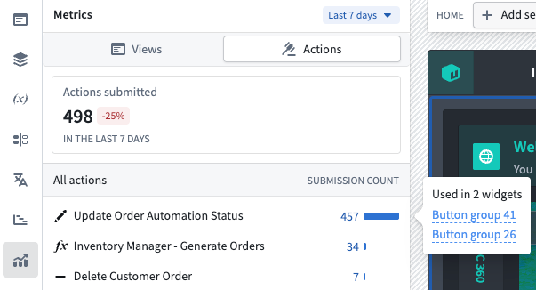
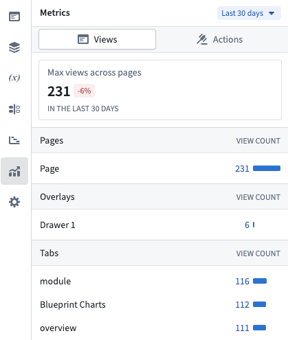
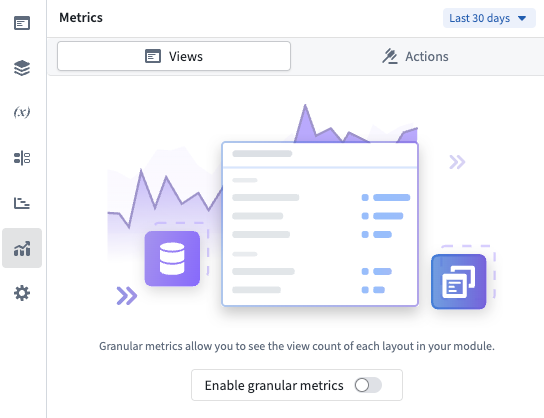

Workshop's usage metrics give module builders visibility into how their applications are being used. From the Metrics tab in the Workshop editor's left sidebar, you can view action submission counts and layout view counts to understand which parts of your module are most active and how usage trends change over time. All metrics are aggregate counts and are not attributable to any specific user.
Action metrics show how many times each action in the module has been successfully submitted. The overview card displays the total number of action submissions across the module for a selected time period along with the percentage change compared to the prior equivalent period.
Below the overview are individual actions with their submission counts and a proportional bar indicating relative usage. Select an action to view which widgets in the module use that action.

Action metrics are available by default for all modules and do not require any additional configuration.
Layout view metrics track how many times each page, tab, and overlay in the module has been viewed by users. The overview card displays total views across all layouts, and the list view breaks down views by individual layout item.

Selecting a page or overlay in the list navigates to that layout in the editor.
Layout view metrics require builders to opt in. To enable tracking:
After enabling, it may take up to 24 hours before view metrics begin to appear in the metrics panel. Layout view data is processed in a daily aggregation, so new views are reflected once per day rather than in real time.

Layout views are only recorded when the module is viewed on the main branch in View mode. Views in Edit mode or on draft branches are not tracked.
Both action metrics and layout view metrics support configurable time periods. Use the period picker at the top of the Metrics panel to select 7 days, 30 days, or 90 days. The default is 30 days.
Each overview card shows the percentage change compared to the previous equivalent period. For example, when viewing the last 30 days, the percentage change compares against the 30 days before that.
For modules that use embedded modules, overlay views originating from an embedded module are attributed to the embedded module rather than to the parent module.